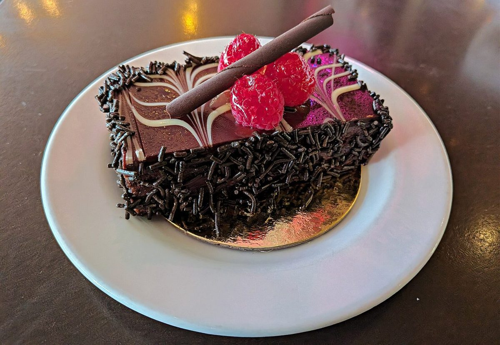
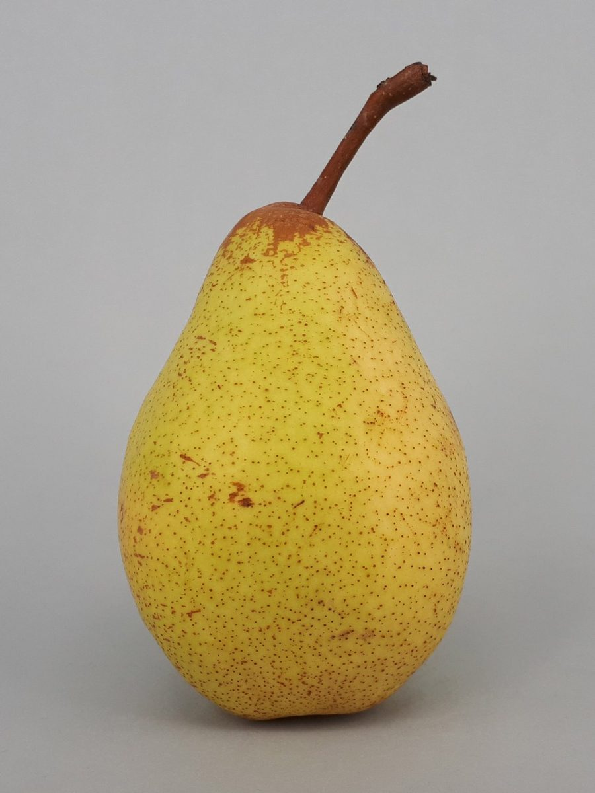

喫茶つばめや



制作側の連想
エスプレッソマシンの部位を、配置図にしてみる
このサイトは、前面にグループヘッドと蒸気管のあるエスプレッソマシンを図にしたつもりで作りました。六つの部位に番号をふり、上の図と並べています。制作側の連想で、お店の理念・由来とは無関係です。実際の製品の仕様を示すものでもありません。
凡例
六つの部位
- 1グループヘッド粉を詰めた器具を差し込み、お湯を送り出す、機械前面中央の金具。
- 2ポルタフィルター持ち手のついた金属の器具。粉を詰めるバスケットを受ける部分。
- 3スチームノズル蒸気を出す細い管。機械の側面から斜め下へ伸びる。
- 4圧力計丸い文字盤と針で、内部の圧力の目安を示す計器。
- 5水タンク機械の上にある、水をためておく透明な容器。
- 6ドリップトレイ落ちたしずくや余った水を受け止める、最下段の受け皿。


